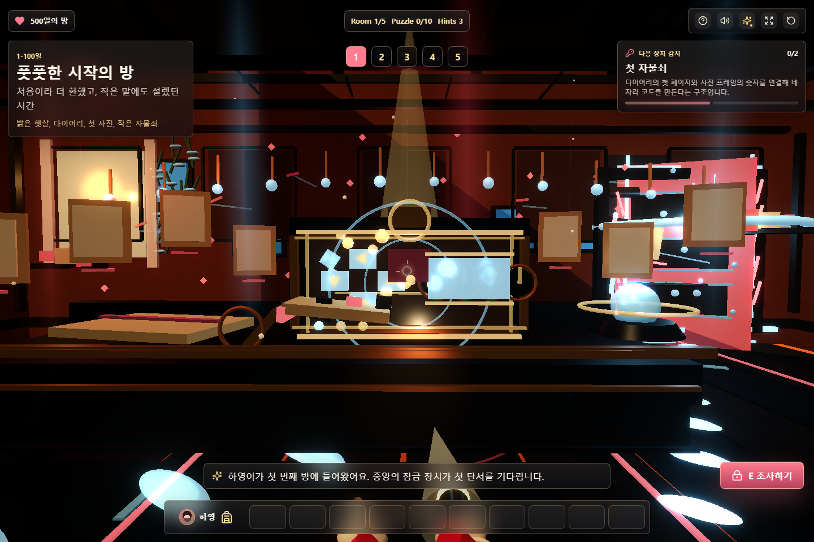
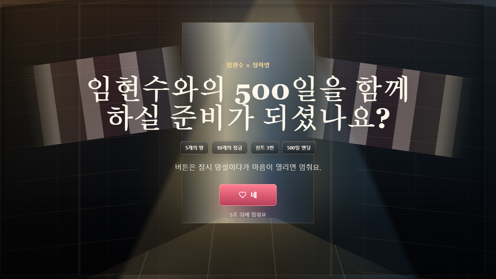
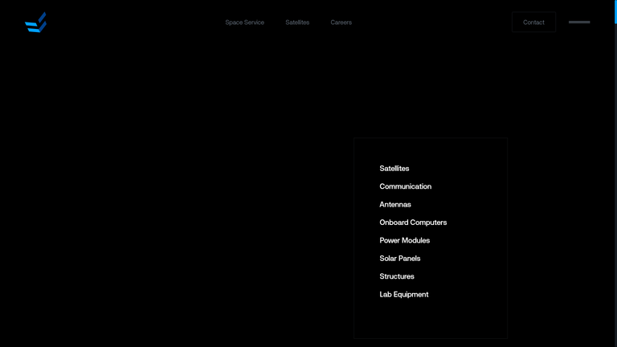
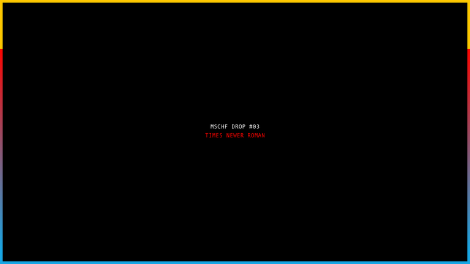

방마다 다른 물리 퍼즐 장치 만들기
중앙 콘솔이 모든 방에서 비슷해 보이던 문제를 줄이기 위해, 5개 방마다 다른 3D 장치 키트를 추가했다. 이제 콘솔은 다이어리/사진 슬롯, 카페 토큰 영수증, 빗방울 방향 레일, 노트 브리지, 피날레 프리즘 게이트로 구분된다.
Current State


Reference Patterns


Implemented Ideas
1. Room-Specific Device Silhouettes
모든 방이 같은 콘솔을 반복한다는 느낌을 줄이기 위해 각 방 전면 장치를 다른 물체 조합으로 만들었다. 1방은 앨범/사진 슬롯, 2방은 영수증/컵/토큰, 3방은 빗방울/방향 패드/갈라진 하트, 4방은 노트 브리지, 5방은 프리즘과 메모리 프레임으로 보인다.
┌ 콘솔 ─────────────────────┐ │ Room 1: diary + photo slot │ │ Room 2: receipt + tokens │ │ Room 3: rain rail + heart │ │ Room 4: note bridge │ │ Room 5: prism gate │ └───────────────────────────┘
2. Animated, Verifiable Props
장치별 메쉬에 deviceKitFloat, deviceKitScanner, deviceKitRainDrop,
deviceKitPrism 같은 상태를 붙이고, 언락/포커스에 반응하도록 만들었다.
render_game_to_text()에는 roomDeviceKits가 추가되어 검증에서 빠지면 실패한다.
QA
npm run build통과.npm run verify:game통과. 10개 퍼즐, 엔딩, 모바일 조작, 그래픽 모드, 힌트 계약서, 새 장치 메타데이터를 검증했다.npm audit --omit=dev통과, 취약점 0개.- develop-web-game Playwright 하네스 통과.